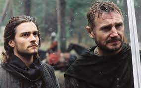

Venha ver o pôr-do-sol
O conto Venha ver o pôr-do-sol trata da história de Ricardo e Raquel, um casal de ex-namorados.
A partir do momento em que terminam o namoro, e Ricardo, não satisfeito com a separação, e por conhecer muito bem o espírito aventureiro de Rachel, chama ela para um último encontro em um cemitério abandonado.
Desenho do Ian Urias:
Esse desenho representa a parte inicial do livro aonde Ricardo encontra Rachel.

Desenho João Pedro:
O desenho demostra a "Cena" em que acontece a reviravolta na história.

Desenho Victor Hugo:
Este desenho demostra a história em si, o pôr do sol em um cemitério.

FIlme Cruzada
O filme a cruzada conta a história sobre um ferreiro que acaba se tornando o dono de uma terra próxima a Jerusalém,que esta sendo atacada pelos os musomanos que querem sua terra de volta pelo fato de ser "sagrada",porém o ferreiro discorda disso,sagrado é o povo diz ele.
Bom agora vamos avaliar, começando com o trabalho dos autores que foi um trabalho muito bem feito nós víamos o seus sentimentos expressos pela suas expressões faciais, além de um ótimo enredo e história.
De acordo com minhas críticas acima vocês já devem ter percebido que gostamos muito do filme e o recomendo para assistir.
